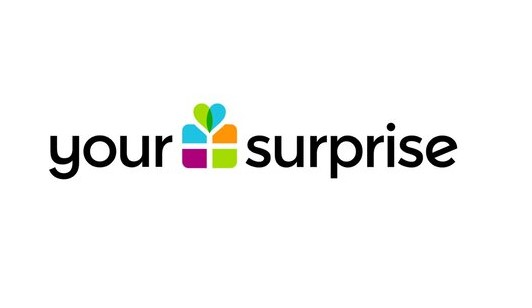

Conneqtech is een bedrijf wat een systeem maakt wat zich verbindt met elektrische fietsen. Het geeft informatie over de fiets zelf en ook over de route die gereden is en waar er bijvoorbeeld dealers zijn waar de fiets gemaakt kan worden.
k

YourSuprise is een webshop waar je gepersonaliseerde cadeautjes kunt kopen. Het is een erg informeel bedrijf, ze maken veel professionele machines en software, maar met elkaar zijn ze een grote familie. Alles wat ze hebben qua producten zoals de site en de machines is de software zelf ontworpen. Ook gebruiken ze veel van de data die ze verzamelen van klanten om de gebruikservaring voor elk zo persoonlijk mogelijk te maken. Ook analyseren ze hun eigen data om voordeel te hebben in de toekomst door te weten wanneer de pieken zijn in de verkoop.
Rollen worden niet persé uitgedeeld, want wanneer iedereen een rol krijgt werken ze alleen met dat doel voor ogen. Als er dan een rol moet worden gegeven zien ze het liefst iedereen als software engineer.
Contactgegevens CTO: arne@yoursurprise.com
YourSuprise is een webshop waar je gepersonaliseerde cadeautjes kunt kopen. Het is een erg informeel bedrijf, ze maken veel professionele machines en software, maar met elkaar zijn ze een grote familie. Alles wat ze hebben qua producten zoals de site en de machines is de software zelf ontworpen. Ook gebruiken ze veel van de data die ze verzamelen van klanten om de gebruikservaring voor elk zo persoonlijk mogelijk te maken. Ook analyseren ze hun eigen data om voordeel te hebben in de toekomst door te weten wanneer de pieken zijn in de verkoop.
Rollen worden niet persé uitgedeeld, want wanneer iedereen een rol krijgt werken ze alleen met dat doel voor ogen. Als er dan een rol moet worden gegeven zien ze het liefst iedereen als software engineer.
Contactgegevens CTO: arne@yoursurprise.com
k
k
| Onderzochte bedrijven | |
|---|---|
| Bedrijf 1 | Conneqtech |
| Bedrijf 2 | ZLM |
| Bedrijf 3 | YourSuprise |
| Bedrijf 4 | Syntess |
| Bedrijf 5 | Soltegro |